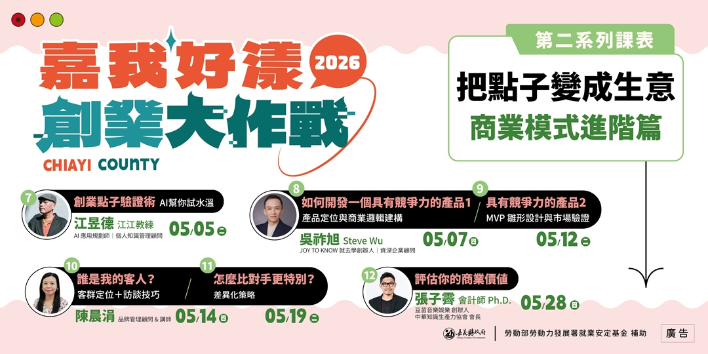
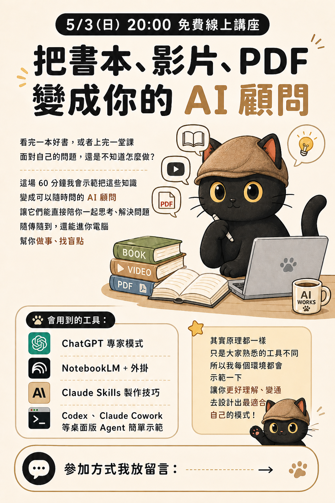

Slides & Examples
Open for reference
How to Train Your AI Employee
Move AI from a chat toy to a real working partner. Designed for business owners, solo founders, company-of-one operators, and freelancers who want AI genuinely embedded in their workflow.

Yongli Rotary Club AI Workshop
An AI literacy and hands-on workshop for chamber members. Covers ChatGPT Projects, Gemini Gems, NotebookLM, and digital chamber applications.
Professional Product Photos with Your Phone + AI
A session for local business owners. Use your phone and AI tools to build your own product photo library and brand visual assets.
The Instructor's Agent Workflow
An eight-stage process from a social post to a full Skills pack. Covers research, organization, ideation, pre-course surveys, promotion, lesson prep, deliverables, post-course repurposing, and cross-course reuse. Each chapter includes live classroom notes.

Relationships Without Emotional Drain
Co-hosted with Tang Hung-Sheng. How to return responsibility and agency to the right person in a relationship, and use AI to practice emotional responses and healthy boundaries. Includes a student survey analysis template.

Validate Your Startup Idea with AI
For aspiring entrepreneurs: how to test your idea with AI before investing heavily in building. Includes the full course slide deck in a clean single-page layout.
MVP Validation Template
A reusable web template for organizing customer interviews, pain-point categorization, and needs validation. Built for anyone building products, services, or running user research.

Turn Books, Videos, and PDFs into Your AI Advisor
Use ChatGPT, NotebookLM, and Claude Skills to transform books, videos, and PDFs into an on-call AI advisor that can also spot your blind spots.

Harness Engineering & LLM Wiki for Non-Engineers
A plain-language introduction to two engineering concepts: Harness Engineering and LLM Wiki. Covers agents, knowledge management, and why "harnessing" AI matters even if you never write code.

Build Your Learning Map with AI
No more information anxiety. Organize your topics, sources, and progress into a trackable learning map. Let AI guide your reading, ask better questions, and connect the dots.
Articles & Short Posts
OngoingCase Studies Have Moved to a Dedicated Page
This page focuses on post-course slides, articles, and learning materials. Completed products, reports, interactive systems, and anonymized templates live in the case studies section.
Coach Jiang on Vocus
A long-form series on AI knowledge management, prompt design, Skills-based workflows, and observations on running a company of one.
Coach Jiang on Threads
Quick takes, upcoming talk announcements, practice notes, and new AI tool discoveries. The fastest way to catch new course previews.
Resources Being Prepared
- Transcript summaries and key takeaways from 30+ past free online talks
- AI tool cheat sheets (Claude, ChatGPT, Gemini, NotebookLM, Codex)
- Beginner guides to knowledge management methods (Tag-Link Method, 3X4 Data Organizer, tacit knowledge distillation system)
- Audience-specific learning maps (instructors, consultants, company-of-one, freelancers, students)